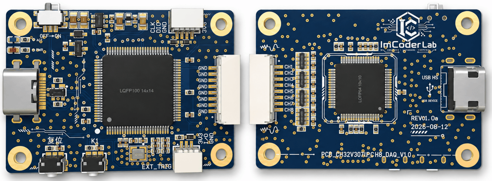
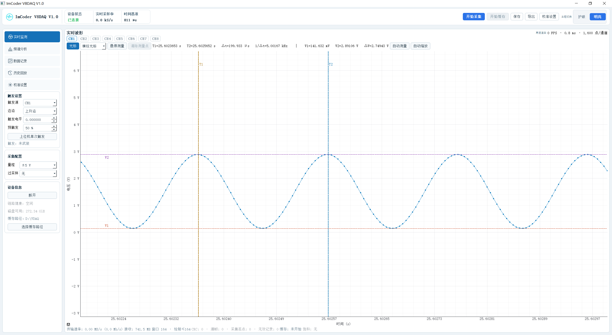
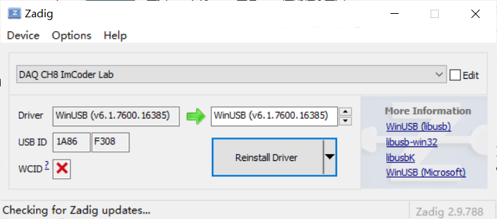
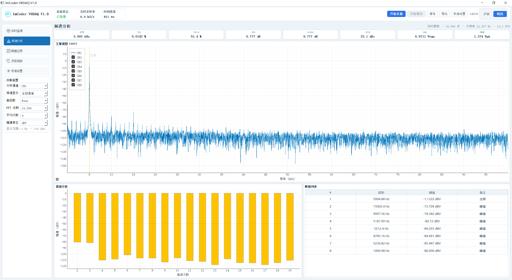

CH32V307V_CH8_DAQ_V1.0

1. 产品概述
CH32V307V_CH8_DAQ_V1.0 是一款基于 CH32V307V 的 8 通道同步数据采集卡，支持 16-bit ADC、最高 200 kSPS/CH 同步采样，并通过 USB2.0 将采样数据实时传输至 PC。配套 Python 上位机支持实时波形显示、数据存储及后续信号分析。
2. 核心特点
8 CH 同步采样
8 路模拟输入同步采集，适用于多通道信号分析。16-bit 高分辨率 ADC
提供更精细的电压信号采集能力。200 kSPS / CH 高速采样
最高支持 200 kSPS 实时采集。±10 V / ±5 V 双量程输入
兼容多种模拟电压信号。USB2.0 实时传输
采样数据可实时上传至 PC。Python 上位机支持
支持实时波形、数据存储及二次分析。
3. 详细规格
参数 |
规格 |
|---|---|
模拟输入 |
8 CH |
ADC分辨率 |
16 bit |
最高采样率 |
200 kSPS / CH |
总采样率 |
200kSPS |
采样方式 |
8通道同步采样 |
输入范围 |
±10 V / ±5 V |
输入类型 |
单端/双极性 |
模拟带宽 |
20kHz |
输入阻抗 |
1MΩ |
SNR |
90 dB typ.（±10 V、无过采样） |
ENOB |
约 14.7 bit |
RMS Noise |
约 224 µV RMS（按±10 V满量程、SNR=90 dB估算） |
通信方式 |
USB2.0 |
工作模式 |
连续 |
上位机 SDK |
Python |
尺寸 |
46 × 32 mm |
4. 硬件接口
5. 使用教程

本设备用于同步采集 8 路模拟信号，并通过 USB 将波形实时显示、分析和保存到 Windows 电脑。
5.1. 首次使用
将整个
ImCoder V8DAQ V1.0文件夹复制到电脑，不要只复制 EXE 文件。连接采集设备。首次连接时，使用 Zadig 将采集设备的
DAQ CH8 ImCoder Lab驱动改为WinUSB。双击
ImCoder V8DAQ V1.0.exe启动上位机。

5.2. 开始采集
确认顶部设备状态显示“已连接”；若未连接，可点击左侧“连接”。
在左侧“采集配置”中选择量程：
±5 V或±10 V。选择过采样倍率：无、2×、4×、8×、16×、32×或64×。过采样倍率越高，采样率越低。
点击顶部“开始采集”，即可查看 8 路实时波形；再次点击可停止采集。
采集或记录过程中不要切换量程、过采样倍率或执行设备校准。
5.3. 波形查看
鼠标滚轮可缩放坐标轴，左键拖动可移动波形。
“自动缩放”可恢复合适的显示范围。
“光标”可测量时间差、频率和电压差。
开启“悬停测量”后，将鼠标移到波形附近可查看采样点数值。
停止采集后，可用左键锁定多个测量点。
顶部“保存”可将当前波形或频谱保存为 PNG 图片。
5.4. 频谱分析
点击左侧“频谱分析”，选择分析通道、窗函数和 FFT 点数，即可查看主频、THD、THD+N、SNR、SINAD 和 SFDR 等结果。

5.5. 数据记录与回放
默认保存目录为
文档\VDAQ-Records，可点击顶部“导出”修改目录。在“数据记录”页选择记录模式、格式和通道。
点击顶部“开始缓存”开始记录，完成后点击“停止记录”。
推荐使用
.vdaq格式进行高速或长时间记录；CSV 文件较大，适合短时间记录或导入其他软件。在“历史回放”页选择记录文件，可缩放、翻页、拖动时间轴并查看各通道数据；也可在记录列表中双击文件直接回放。
异常中止的记录会保留为 .partial 临时文件，它不是完整记录文件。
5.6. 通道设置与校准
在“校准设置”页可以修改通道名称、显示状态、单位、工程增益和工程零偏。
设备电压校准需要精密直流源和高精度万用表，必须先停止采集和记录。±5 V 与 ±10 V 量程需分别校准；不熟悉校准流程时，请勿写入设备校准参数。
5.7. 常见问题
设备未连接：检查 USB 线、电源及接口 0 是否已正确绑定 WinUSB。
没有波形：确认已点击“开始采集”，输入接线正确，信号没有超出所选量程。
出现饱和提示：输入接近满量程，请降低信号幅值或切换到
±10 V量程。记录文件过大：优先使用 VDAQ 格式，或提高过采样倍率以降低采样率。
设备意外断开：上位机会尝试自动重连；若仍失败，请重新插拔 USB 后点击“连接”。
关闭软件前，请先停止数据记录和采集。